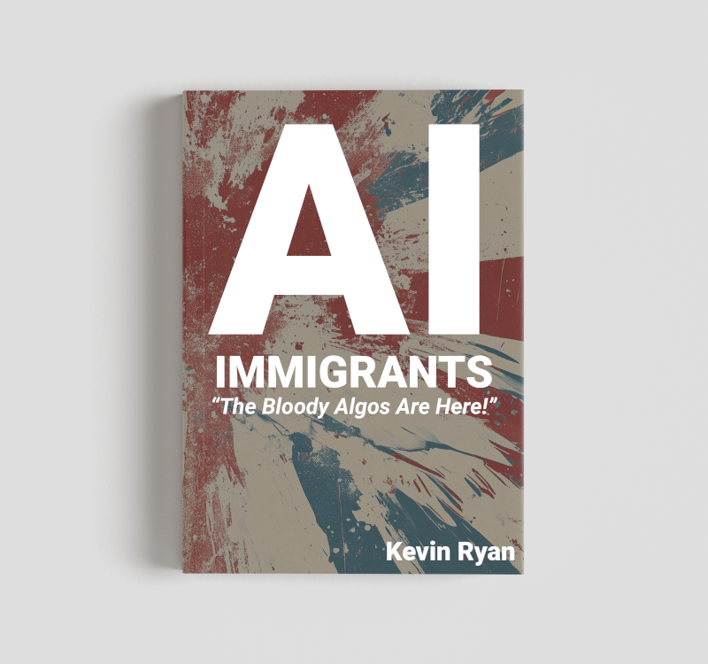

"The Bloody Algos Are Here!"
Artificial intelligence isn't just another technology — it's a new kind of immigrant. One that doesn't sleep, doesn't eat, and learns faster than we do. This book asks the question no algorithm can answer: who owns the future?
Drawing parallels between today's algorithms and yesterday's immigrants, AI Immigrants explores who wins, who loses, and what it really means to stay human in an automated age.
From deep-fake politics to data colonialism, from algorithmic landlords to digital day-labourers — this is part social commentary, part survival guide, and a manifesto for keeping humanity indispensable.
What if the algorithm is just the latest distraction from harder questions about corporate power, labour rights, and democratic accountability?
Kevin Ryan has worked in technology for thirty years — long enough to have seen every wave of disruption sold as revolution and every revolution dismissed as hype. He has worked with CERN, the BBC, the Financial Times, and NatWest, built the DevOps infrastructure for robots destined for the moon, and spent the last decade helping enterprises adopt the tools that are now rewriting the rules of work.
He has led enterprise AI adoption programmes, put coding agents into the hands of engineering teams, and delivered board-level recommendations on what to do next. He knows how the machines work. He also knows who gets to decide how they're used — and who doesn't get asked.
He is based between London and Budapest, which means he is an immigrant too.